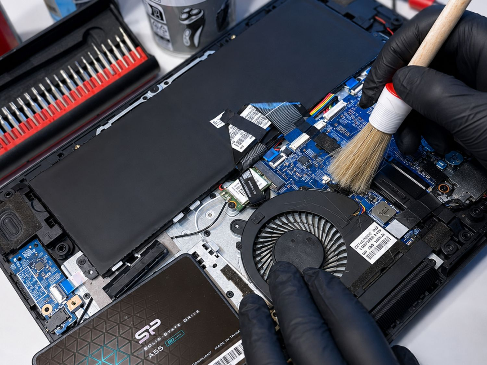
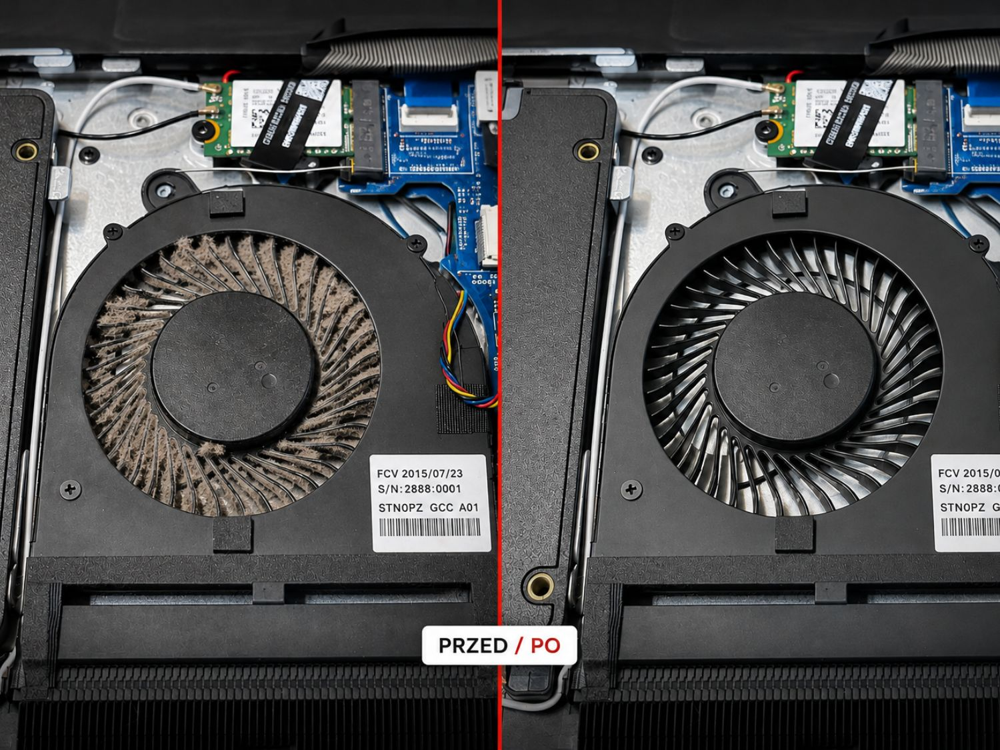
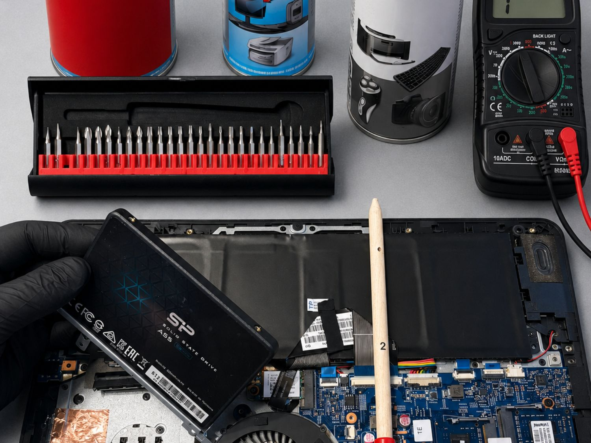

Laptop Turbo
Montaż dysku SSD oraz migracja systemu i danych ze starego dysku.
249 zł + koszt SSDSerwis i modernizacja laptopów z dojazdem na terenie Tarnowa i okolic.
Montaż dysku SSD oraz migracja systemu i danych ze starego dysku.
249 zł + koszt SSDInstalacja systemu Windows wraz ze sterownikami.
170 złCzyszczenie układu chłodzenia i wymiana pasty termicznej.
199 złWymiana uszkodzonej klawiatury laptopa.
180 zł + częśćWymiana uszkodzonego ekranu laptopa.
220 zł + częśćWymiana uszkodzonego wentylatora laptopa.
170 zł + częśćMontaż dodatkowej pamięci RAM. Koszt pamięci zależy od wybranego modułu.
80 zł + pamięćCzyszczenie, konserwacja i naprawa laptopów w Tarnowie i okolicach.



Usługi wykonuję u klienta na terenie Tarnowa i okolic. W zależności od rodzaju naprawy sprzęt może również zostać pozostawiony do serwisu po wcześniejszym ustaleniu.
Przed rozpoczęciem pracy ustalam zakres usługi i przedstawiam wycenę. W przypadku wymiany części ich koszt jest ustalany indywidualnie po określeniu modelu urządzenia.
Jeśli laptop działa wolno, przegrzewa się, ma uszkodzony ekran, klawiaturę lub wentylator albo wymaga modernizacji, skontaktuj się w celu ustalenia zakresu prac.